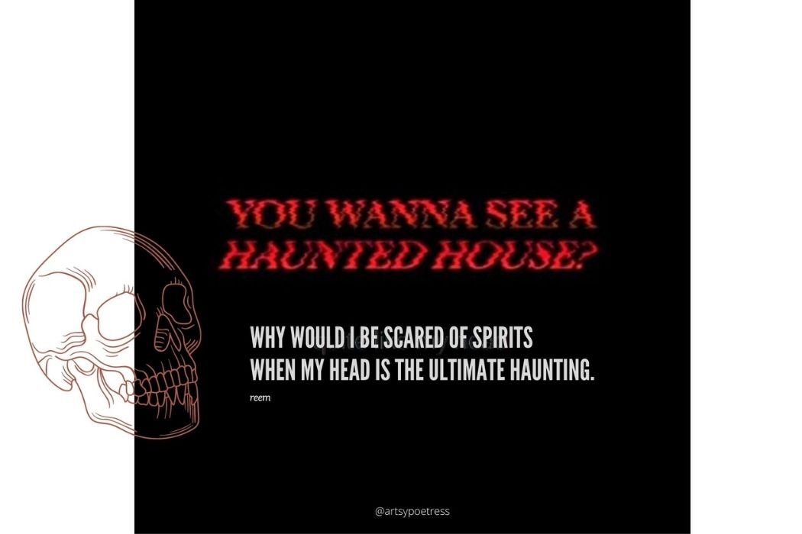

we prefer not to get attached to anybody, because of our paranoid nature and how people never seem to truly get us. some will say were antisocial, some will say were overtly social believe them both, were never the same person twice. .
we need a lot of alone time because most of the times were all there being everything to everyone, while others are not able to reciprocate quite the same.

we might leave to save you when were completely ruthless, but this move is always misinterpreted, to being cold and not caring about the people who mean to most to us, were just finding the middle ground between letting in and letting go, between staying and not leaving too early, and not leaving too late, when in reality we dread commitments because wee scared of abandonment, were scared of titles: the term date or BFF haunts us, if only we could tell you.
Explain to you our opposite tendencies, people often misinterpret our leaving as a rude and blatant gesture, something that needs an explanation,
it makes them feel unwanted, if only we could tell them, but we presume they know, they know what it is, even though deep within we want to tell them as bad as ever, but reality strikes and as much as we want to tell them, were completely drained, devoid of any energy,
having absolute no capabilities within us, to make evens or explain, so we leave, we leave people we have dangerously attached to, before they can even decide to ever leave us,
we leave because we know were not in a good place and keeping one person in it is a million times better than dragging the ones that mean the most to us, we move on quickly, honestly, that’s bs.
Some of us We move on fast that’s accurate, because initial days hurt as if there’s a dagger that’s been pierced deep within our souls, anxiety hits as bad as ever, you cannot escape from pessimistic thoughts that already existed, only amplified after leaving your loved ones,
because the decisions we made were so impulsive that until yesterday we didn’t decide to leave you, until today, we’ve cut you off almost forever and the uncertainties in our behaviour only almost leaves lifelong scars,
and people tell us what commitment will you fulfil, your just a stranded soul, and never settle, when in reality they don’t even know our actual motives, that’s nothing but to save the ones we love, and be saved from the world.
We don’t get attached, but once we sense danger, once we realize were on the verge of loosing ourselves a little more, detachment is then our reflex reaction, it takes a minute to take, and nothing can make us change of our decisions,
unless the person we detached from, is holding onto us tighter than ever, breaks all the barriers we’ve set up, that person who stays, we only keep deep connections with those fight to stay, not the ones who leave once pushed away. We only crave for the real stuff, and this is how only real people stay, fake friends get pushed away.

there's just too much depth in the reasoning you guys do, its harder to figure out what you mean by withdrawal especially when the person is more of a mystery than an open book.